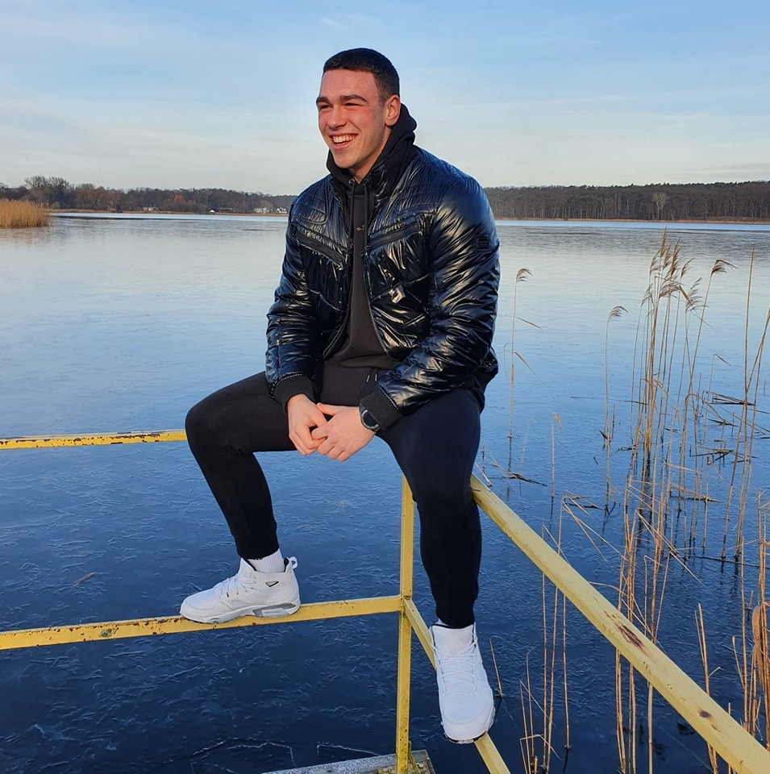

About

Curriculum Vitae
During my final years of high school, I wasn't sure what career path to pursue. My interests in
mathematics, physics, computers, and games naturally led me to explore game development.
I began studying at DAE, where I discovered programming for the first time. We started with C++, and I was instantly
hooked.
Since then, I've become a passionate C++ developer focused on building
high-performance applications with a clean API and modern C++ features. I
especially enjoy engine, graphics, and embedded systems programming.
Born and raised in Belgium with Polish roots, my long-term goal is to return to Poland and
continue my career there.
Outside of programming, I value a healthy lifestyle. I practiced judo for eight years,
earning the Belgian U21 +100 kg title in 2022, and I enjoy weightlifting in my free time.